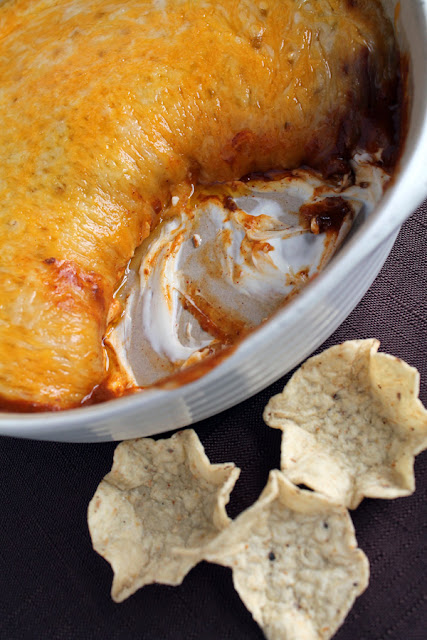

Chili Dip

Description
This recipe is simple, quick, and delicous. It can be made in the oven or microwave, and is perfect snack for those football Sundays
Ingredients
- 1/2 stick of cream cheese
- Half can of chilli(I prefer no bean)
- 1 cup shredded colby jack cheese
- Tortilla chips
Steps
- Grab a 9" glass pie dish
- Spread cream cheese with a spoon to make a nice bottom layer
- Evenly distribute chilli on top of cream cheese
- Top with cheese
- Microwave for 4 minutes, or bake for 15 minutes at 350F
- Enjoy with your favorite tortilla chips